Sift is a B2B SaaS that turns scattered customer feedback into clear, prioritized product decisions. Every roadmap item is traceable back to the real user voices behind it. This document is the complete research foundation for the product design sprint.
The synthesis trust gap is real and undefended. No direct competitor demonstrates a trustworthy full-chain synthesis with honest confidence levels on public pages.
The "confident PM defending her roadmap" positioning is unclaimed. All HARD competitors target broad teams; no one owns the PM-specific evidence story.
The market has converged on AI capture and classification. AI synthesis that a PM can trust enough to act on is not the dominant pattern - it is the open opportunity.
Trust is earned through decomposability and inline citation, not through confident-sounding outputs. Showing the work is the mechanism, not the output quality.
The shareable evidence brief is simultaneously the acquisition asset, the retention hook, and the referral artifact. Building it well is the highest-leverage early investment.
One-glance synthesis of all research findings, placed here for executive context before the detailed sections follow.
Product teams at B2B mid-market SaaS companies cannot make confident, evidence-backed roadmap decisions because customer feedback is scattered across 3-7 disconnected tools, synthesis is manual and unreliable, and every prioritization call can be challenged by sales or leadership with no traceable evidence to counter it.
60% of activated users cite Sift as primary input for roadmap decisions within 90 days.
Planning session time under 25 minutes.
Free-to-paid conversion 8-12% within 60 days.
12-month NRR 110%+.
Primary: PM at B2B SaaS, 28-38, 3-8 years experience, drowning in scattered signal, needs defensible prioritization.
Secondary: Head/VP of Product managing 3-8 PMs, presenting evidence-backed strategy to leadership.
Finish a prioritization session in under 25 minutes with defensible evidence, not guesswork.
Say "Sift shows this is the top priority" in a stakeholder meeting and mean it.
Close the loop with sales: here is the evidence behind why we are building this.
Feedback ingestion from 3-5 sources (Intercom, Zendesk, Gong, reviews, CSV). AI synthesis into transparent theme clusters with evidence counts. Full drill-down: theme - evidence items (n=X) - raw source text. Honest confidence display (sample size visible, thin evidence flagged). Prioritization view with scoreable themes. Shareable public evidence brief. Free: 250 items/month, 1 integration, themes visible. Paid: unlimited + full traceability + team features.
H1 (riskiest): If synthesis is transparent and traceable, PMs will trust it enough to act without re-synthesizing raw data themselves.
H2: If first synthesis uses real data and confirms something the PM already suspected, activation will complete.
H3: If evidence briefs are shareable as public links, sharing will become the primary organic acquisition channel.
H4: If upgrade prompts are context-specific, conversion will exceed a generic upgrade wall.
PMs will trust Sift's AI synthesis enough to act on a real roadmap decision without re-synthesizing the raw data themselves. If false, the core time-saving value fails.
Show a PM their own feedback synthesized into 3-5 themes with evidence counts. Ask: "Would you present this in a roadmap review without auditing the raw data first?" A "yes" validates H1. Target: 6 out of 10 PMs in prototype interviews say yes.
| # | Objective | Metric | Target |
|---|---|---|---|
| 1 | PMs trust and act on Sift synthesis | % citing Sift as primary input for last roadmap change | 60% of activated users at 90 days Hypothesis |
| 2 | Faster prioritization sessions | Avg. time from session start to decision | Under 25 minutes Hypothesis |
| 3 | Free-to-paid conversion | Conversion within 60 days of hitting limit | 8-12% Hypothesis |
| 4 | Team retention and expansion | 12-month net revenue retention | 110%+ Hypothesis |
| Segment | Profile | JTBD | Priority |
|---|---|---|---|
| The Overloaded PM | PM at B2B SaaS, 28-38, 3-8 years, manual synthesis today, lives in Jira/Linear | When planning sessions come up, want trustworthy traceable synthesis to make a defensible call | Primary |
| The Evidence-Hungry Product Lead | Head/VP Product, 35-45, manages 3-8 PMs, presents strategy to board | When presenting to leadership, want systematic evidence behind each priority | Secondary |
| The Signal Supplier | CS Manager or Support Lead, daily customer contact, insights lost in transit | When sharing feedback, want to see it was heard and used | Later |
Up to 250 feedback items/month. Theme clusters visible (names and counts). 1 integration. Single-user workspace. No evidence drill-down. No team features. No sharing or export.
Goal: Let the team experience the synthesis quality before hitting the evidence-tracing wall.
Starter (~$30-40/seat/mo): unlimited signal, full traceability, 3+ integrations. Growth (~$20-25/seat/mo, 5-20 seats): team features, roadmap sync. Enterprise: custom.
All pricing unvalidated. Willingness-to-pay research required before setting prices.
PMs will trust Sift's AI synthesis enough to act on a real roadmap decision without re-synthesizing the raw data themselves.
If false, the core time-saving value fails. Sift becomes another data source they process manually. See Hypothesis H1 in Section 7.
| Stage | Primary metric | Target | MVP decision |
|---|---|---|---|
| Acquisition | Organic/PLG signups/month | 200/month at 6 months H | Build shareable evidence brief as acquisition asset |
| Activation | % completing first synthesis on own data within 7 days | 40% H | CSV import + Intercom as first connections; reach synthesis fast |
| Retention | Week-4 retention rate (activated users) | 50% H | "New signal since last session" digest as re-engagement hook |
| Revenue | Free-to-paid conversion within 60 days of limit | 10% H | Context-specific upgrade prompt at the exact gated feature |
| Referral | % signups attributed to referral | 25% at 12 months H | Public shareable brief with "made with Sift" attribution |
The evidence brief drives acquisition (shared publicly), referral (circulates in org tools), and retention (team becomes dependent). It is the single most impactful early product investment for AARRR.
Demo data does not create trust. The activation moment is "I see a theme from my own feedback that I already suspected is real." Confirmation with evidence, not discovery of something new.
Sources: live product sites and pricing pages, fetched June 2026. Screens captured via Playwright into research/screens/.
| Name | Group | Why in group |
|---|---|---|
| Productboard | Hard | Direct competitor: centralizes feedback, generates roadmaps, AI synthesis via Spark |
| Canny | Hard | Direct competitor: AI autopilot for capture, vote-based roadmap, most widely adopted mid-market |
| Enterpret | Hard | AI synthesis layer: adaptive taxonomy, 50+ integrations, enterprise-focused intelligence infra |
| Dovetail | Soft | Same JTBD (evidence-based decisions) from the research angle. "Build with facts not vibes." |
| Jira Product Discovery | Soft | Same JTBD via Atlassian ecosystem. Absorbed Cycle's team. Free tier with Jira integration. |
| Linear | Aspirational | Gold standard for craft, density, and clarity. Not a functional competitor. |
| Perplexity AI | Aspirational | Best-in-class citation transparency. Direct model for how Sift should show evidence. |
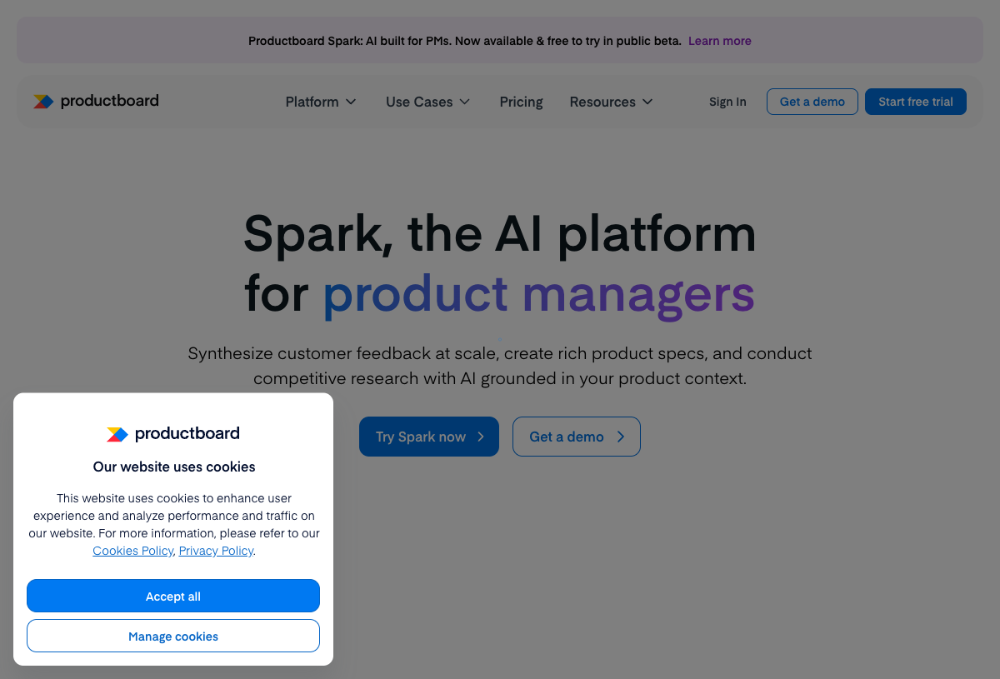
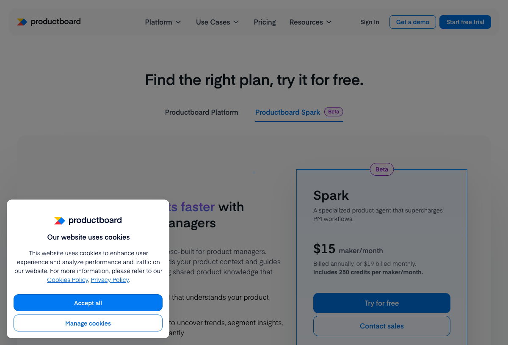
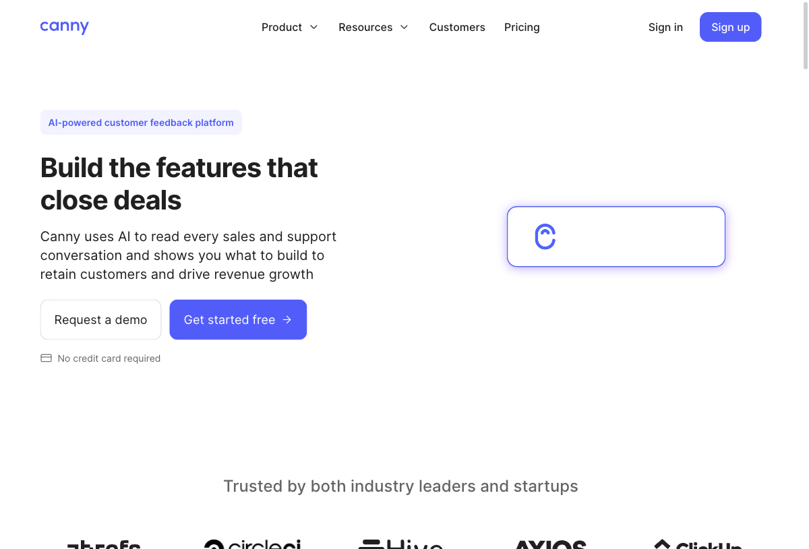
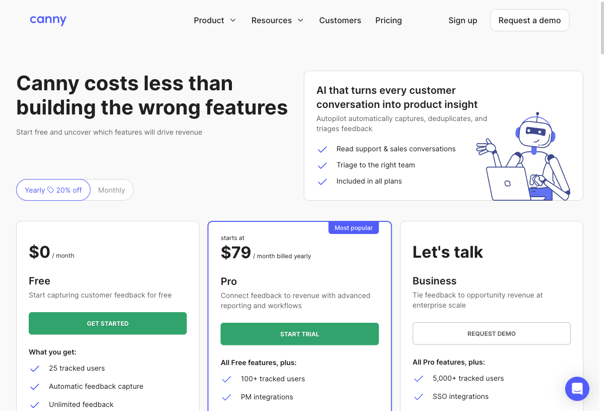
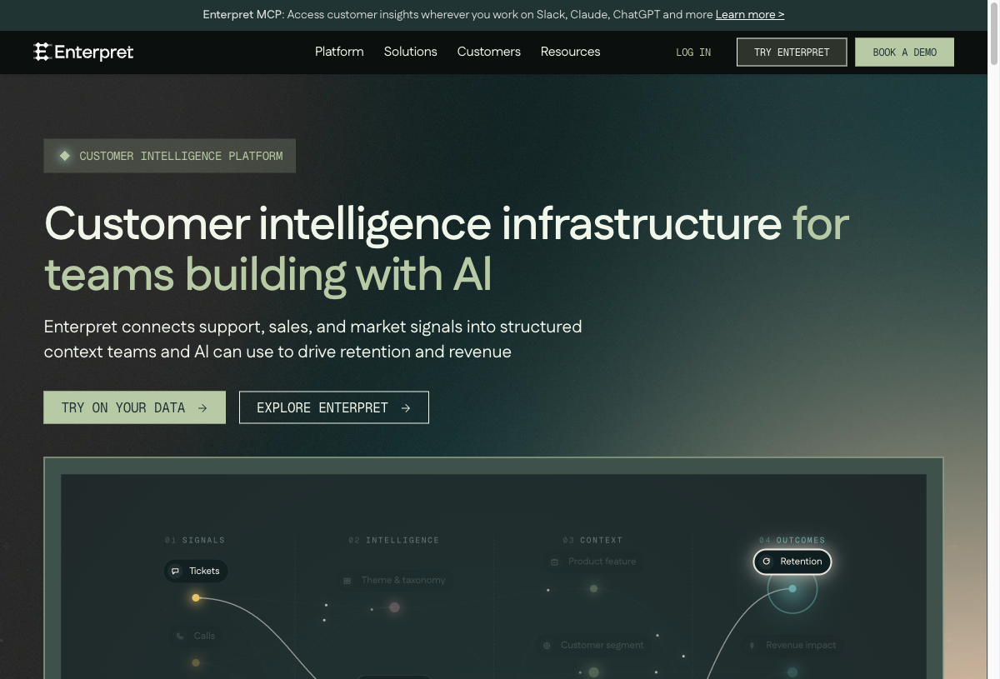
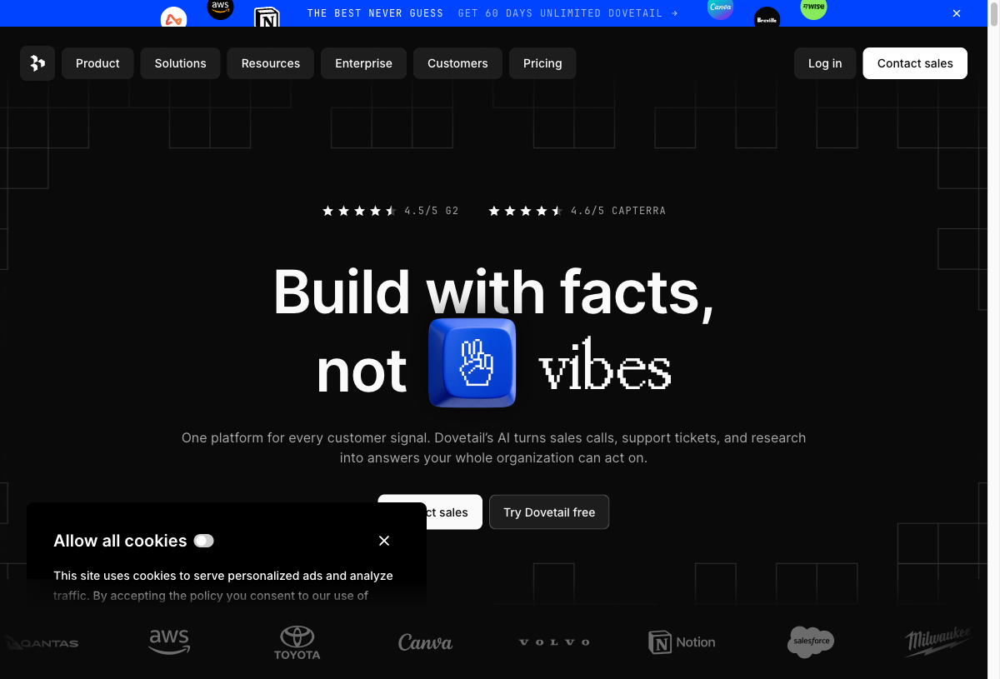
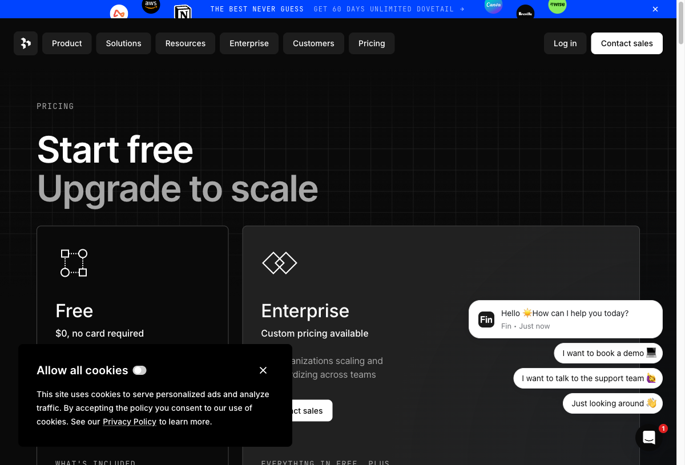
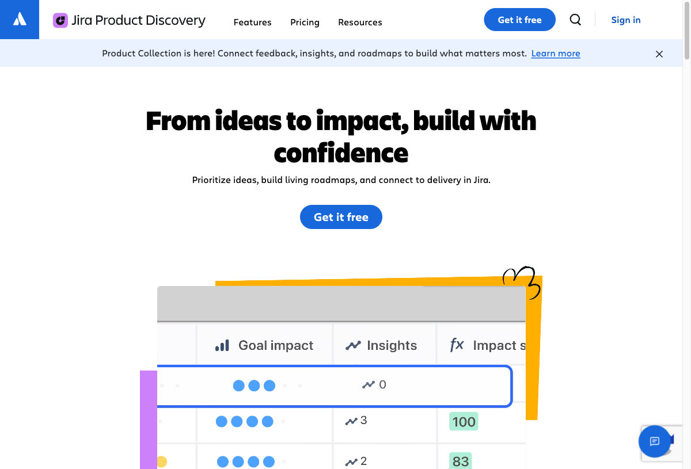
| Product | Audience | Key mechanism | Trust signal | Pricing |
|---|---|---|---|---|
|
Productboard
Hard
|
Enterprise + scaling orgs, 6,000+ teams | LLM workflow prompts (Spark), feedback classification, roadmap views | [? behind login] | $19-59/maker/mo (productboard.com/pricing) |
|
Canny
Hard
|
Mid-market cross-functional, 100K+ companies | AI Autopilot captures from Gong/Intercom/Slack; vote aggregation; public roadmap | Vote counts + linked feedback per feature visible pre-login | Free 25 users, Pro $79/mo (canny.io/pricing) |
|
Enterpret
Hard
|
High-velocity enterprise: Canva, Notion, Apollo | 5-level adaptive taxonomy, 50+ integrations, NL querying ("Why are customers churning?") | Positions as infrastructure, not answer layer. Honest about being the synthesis layer. | Enterprise only, contact sales |
|
Dovetail
Soft
|
Design/research first, expanding to product + CX | AI tags + insight docs with source clips. "Build with facts, not vibes." | Clip-level evidence - insight docs link back to specific video/text quotes | Free (1 project), Enterprise custom (dovetail.com/pricing) |
|
Jira Product Discovery
Soft
|
Atlassian-native PM teams, scaled to enterprise | Configurable scoring + Jira backlog link + Cycle team's approach to discovery | [? behind login] | Free 3 creators, $10-25/creator/mo (atlassian.com/jira/product-discovery/pricing) |
1. AI for capture and classification, not trusted synthesis.
2. Free tiers create desire, not full value - volume/collaboration limits are the universal conversion lever.
3. Broad multi-team positioning dilutes the PM story.
1. Infrastructure (Enterpret) vs. workflow tool (Productboard, Canny) vs. research layer (Dovetail).
2. Bottom-up PLG (Canny, JPD) vs. top-down enterprise sales (Enterpret).
3. Customer-facing (Canny: public roadmap) vs. internal-only (all others).
No competitor demonstrates a transparent, traceable synthesis chain (signal to theme to evidence to decision) with honest confidence levels and challengeable conclusions. This is Sift's primary differentiator.
5 best-in-class products evaluated outside the direct competitor set, scored against 8 criteria for trust and traceability.
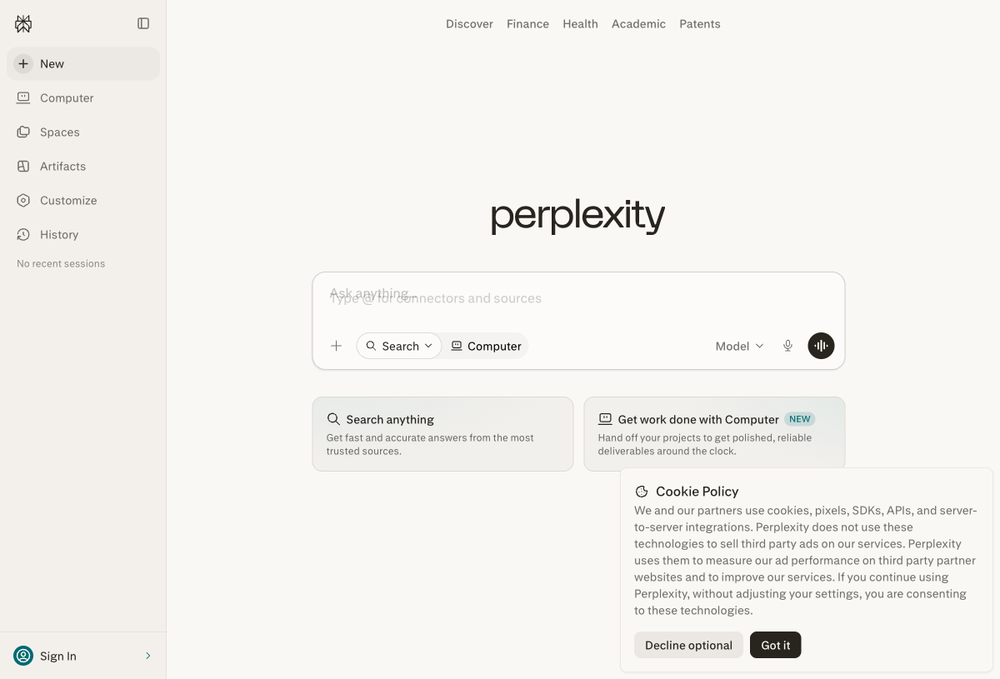
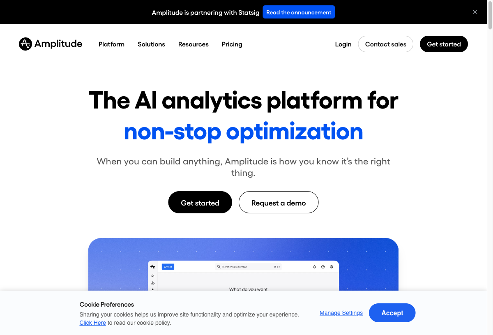
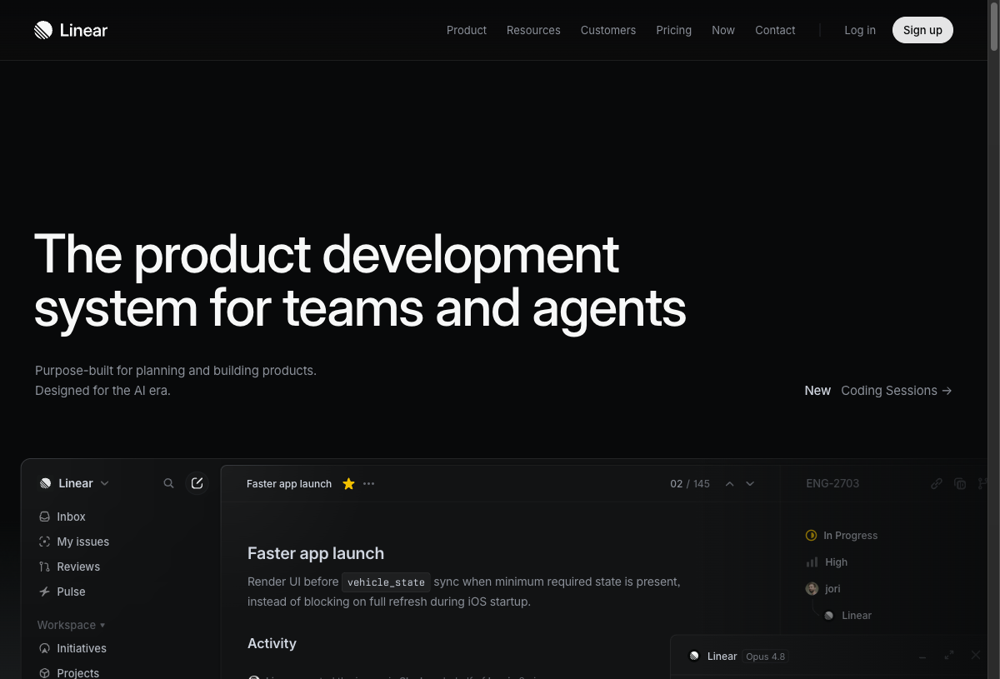
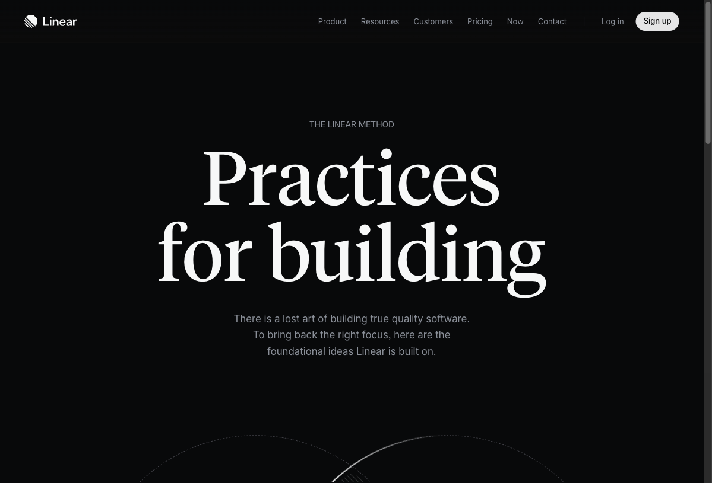
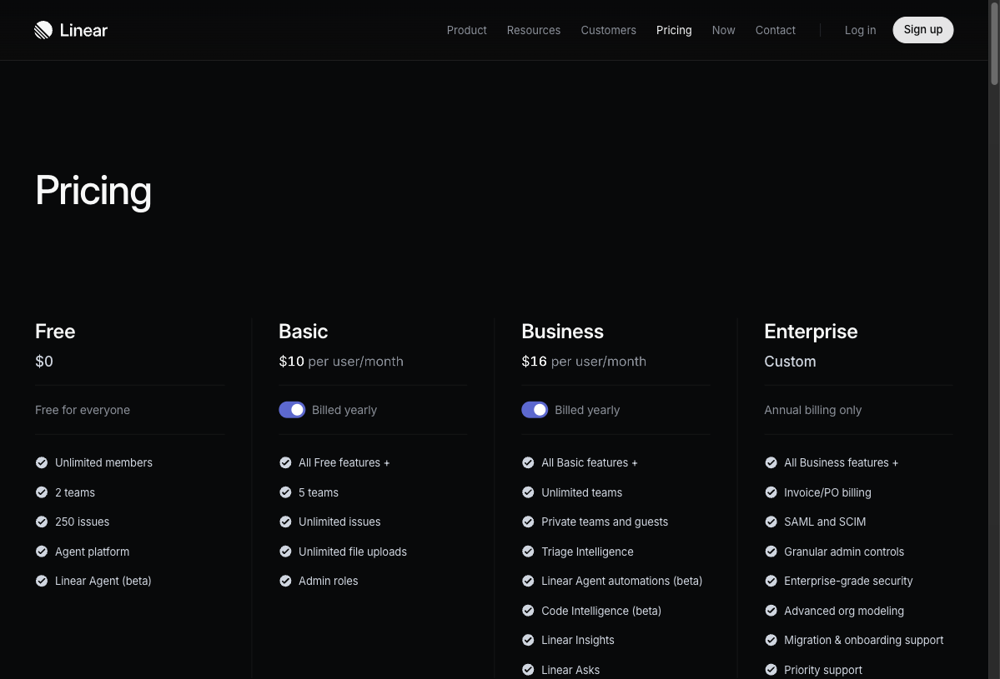
| Product | Transparency | Evidence trace | Confidence honesty | Conflict handling | Inline citation | Density | Override | Memory | Total |
|---|---|---|---|---|---|---|---|---|---|
| Perplexity AI | 3 | 5 | 4 | 3 | 5 | 4 | 2 | 1 | 27/40 |
| Amplitude | 4 | 5 | 3 | 3 | 3 | 4 | 4 | 4 | 30/40 |
| Linear | 2 | 3 | N/A | 2 | 3 | 5 | 5 | 4 | 24/35* |
| Grain | 2 | 5 | 2 | 2 | 4 | 3 | 3 | 3 | 24/40 |
| Notion | 2 | 3 | 1 | 1 | 3 | 3 | 5 | 3 | 21/40 |
*Linear scored out of 35 (Confidence honesty N/A - not a synthesis tool). Scale: 5 = best-in-class, 1 = absent or broken.
From Perplexity AI. Every synthesis theme gets an inline citation count (n=47). Clicking opens the evidence list. The affordance of verifiability is the trust mechanism - users do not need to audit every claim, they need to know they can.
From Amplitude. Theme - Evidence items (n=X) - Full original text. The chain is accessible without leaving the view. Decomposability is the rational foundation of trust. The user trusts the summary because they know they can audit it.
From Perplexity + Amplitude combined. Every theme shows item count, source diversity, and a confidence indicator. Thin evidence is flagged. Honesty about weak evidence increases trust in strong evidence.
Observed in Canny Autopilot and early Productboard AI. Presents conclusions without showing method. The skeptical PM who needs to defend conclusions cannot say "because the AI said so" in a roadmap review. One bad synthesis experience destroys trust permanently. A tool that shows its reasoning fails gracefully; a tool that hides it fails catastrophically.
| # | Pattern | Implication for Sift |
|---|---|---|
| B1 | Synthesis-first, detail-on-demand Entry Point | Synthesis view is always primary. Raw feedback is accessible but never the starting point. |
| B2 | Evidence as a social object | Export and share are primary use cases. Brief must read independently of Sift context. |
| B3 | Trust through spot-checking | Show the most obvious theme first. Give the PM an early win on first session. |
| B4 | Context-switching cost aversion | Every key view delivers value in 10-15 minutes. Jira/Linear integration is retention-critical. |
| B5 | Retrospective synthesis over real-time monitoring | Default to synthesis on demand, not live dashboard. Low-volume session-oriented notifications. |
The core experience is a synthesis-on-demand report. The PM opens Sift, the synthesis of their current feedback is visible (auto-updated), and they can drill from any theme to its evidence. The session output is a shareable evidence brief.
JTBD alignment: the PM's job is to get to a defensible answer within a planning session. Report starts with conclusion, enables verification, produces shareable output.
Competitor gap: no HARD competitor nails the report-with-drill-down for PM synthesis. The pattern is an open position in the market.
Trust mechanism fit: inline citation + progressive drill-down enable synthesis-first, spot-check to verify, then act. The trust-building progression maps directly.
If the target segment shifts to CS/Support Leads (Segment C), the inbox pattern becomes primary. CS teams do process feedback individually and want a triage view. Not chosen for MVP because the PM is the primary target and inbox does not scale to PM synthesis needs.
Does not scale to hundreds of feedback items. Not repeatable across sessions. Trust in a canvas depends on the person who built it, not the system. Defeats the core promise of systematized, consistent synthesis that is trustworthy independently of who ran the session.
| Gap | Description | Source | Confidence |
|---|---|---|---|
| Synthesis trust chain | No competitor demonstrates full traceability from raw signal to decision with honest confidence on public pages | competitors.md, benchmark.md | High |
| PM-specific positioning | "Confident PM defending her roadmap" story is unclaimed by any HARD competitor | competitors.md | High |
| Honest confidence display | No direct competitor shows sample size and confidence level alongside synthesis conclusions | benchmark.md | High |
| Evidence brief as product | The shareable evidence artifact is underbuilt across all competitors | aarrr.md, competitors.md | Medium |
| Free tier value delivery | Current free tiers too restrictive to create genuine "aha" moments at fair volume | competitors.md | Medium |
| Atlassian consolidation risk | JPD + Cycle acquisition could absorb the "good enough" mid-market via distribution advantage | competitors.md, cycle.app/blog | Medium - monitor |
Adversarial verification conducted June 2026. Claims from personas.md and jtbd.md were tested against live sources. The goal was to kill claims first - search for disconfirming evidence before confirming. All sources fetched in June 2026; only sources from the last 1-2 years used.
Multiple independent sources confirm that PMs are wary of using AI for decision support specifically. The wariness is named as the reason AI adoption is limited to lower-stakes tasks.
"Most teams are using AI today for content generation and summaries. Far fewer trust it for prioritization or decision support. The reason is skepticism about the outputs."
Sources: aipmtools.org/articles/future-of-ai-product-management, blog.ravi-mehta.com, productboard.com/blog
Spot-checking (testing AI output against known-good data before extending trust) is described as standard PM practice, not exceptional behavior. Confirms behavioral pattern B3.
"Understanding the data these tools rely on, sanity-checking outputs, and using simple eval style checks before trusting an AI workflow in a critical process is a core competency for modern product managers."
Source: aipmtools.org/articles/future-of-ai-product-management
When AI synthesis includes citations, PMs trust it enough to present to executives. This directly confirms the Perplexity citation benchmark finding (benchmark.md, Mechanism 1) in the PM-specific context.
"Citations make it trustworthy enough to present to execs, and citations make it verifiable when presenting data to stakeholders or executives."
Sources: aipmtools.org/articles/future-of-ai-product-management, aipmtools.org/articles/ai-changing-product-management
H1 is conditionally confirmed. When synthesis is transparent and traceable, PMs DO act on it without re-reading all raw data. They spot-check a subset (trust calibration), then act. Black-box synthesis is not trusted. The condition is transparency - inline citations, evidence counts, drill-down.
"There is no translation layer, no export step, no 'now what?' moment. The insight arrives already oriented toward action." (Productboard on Spark intent)
Sources: productboard.com/blog, aipmtools.org, blog.ravi-mehta.com, capterra.com (Canny reviews - Freeman C., Senior PM, Nov 2025). See strategy.md Section 5.
Real user reviews and industry analysis independently confirm that competitors have solved collection, not synthesis. The PM voice from Canny reviews names this gap explicitly.
"What is the real value of automatically adding 1000s of feature requests into Canny if there's no way of using AI to query or filter within those posts? I would have rather had some type of AI that could read ticket context and auto-assign tags or teams or categories or add to roadmap." - Freeman C., Senior PM (Capterra, Nov 2025)
Sources: capterra.com/p/161103/Canny/reviews/, aipmtools.org/articles/ai-changing-product-management
Multiple independent sources confirm the baseline pain. The pattern is consistent even though no single source confirms the exact 3-5 hours per planning cycle figure. "Hours per week" is confirmed as the order of magnitude.
"One PM reported that summarizing feedback with an AI tool saves them hours every week, replacing the tedious process of reading through hundreds of tickets."
Sources: enterpret.com/blog/2025-product-planning-tips, productboard.com/blog, aipmtools.org
None. No claim from personas.md or jtbd.md was directly disconfirmed by this research. Killed count: 0. This is shown, not hidden.
The adversarial search was conducted: Reddit via browser (network security block), G2 (access temporarily restricted), direct search for PM abandonment of AI synthesis tools attempted. The unconditional reading of H1 (PMs trust ANY AI synthesis without verification) was tested and does not hold - but H1 as stated in strategy.md (trust transparent synthesis to act without re-synthesizing raw data) was not killed - it was conditionally confirmed.
Sift's trust design is not optional polish - it is what makes the core job possible. The research confirms the conditional form of H1 and sharpens the design requirement:
PMs are wary of AI synthesis for decision support (confirmed, HIGH). That wall comes down with transparency: citations, evidence counts, drill-down, and the ability to spot-check (confirmed, MEDIUM). When those mechanisms are present, PMs DO act on synthesis without re-synthesizing everything themselves (confirmed, MEDIUM).
The first post-launch signal to watch: whether activated users open the evidence drill-down at least once in their first session. If they do, the spot-checking pattern is active and the trust chain is working. If they never open it, either synthesis quality is already trusted (good) or the drill-down is too hidden (bad). One behavior distinguishes between two very different product situations.
Full verification record: research/docs/live-research.md